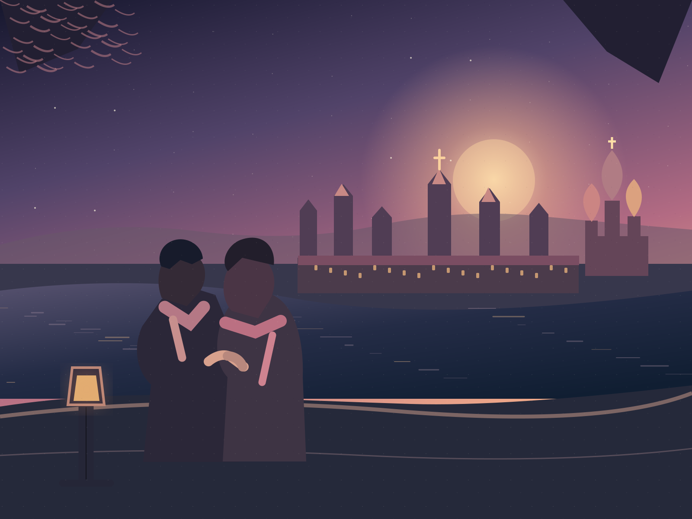
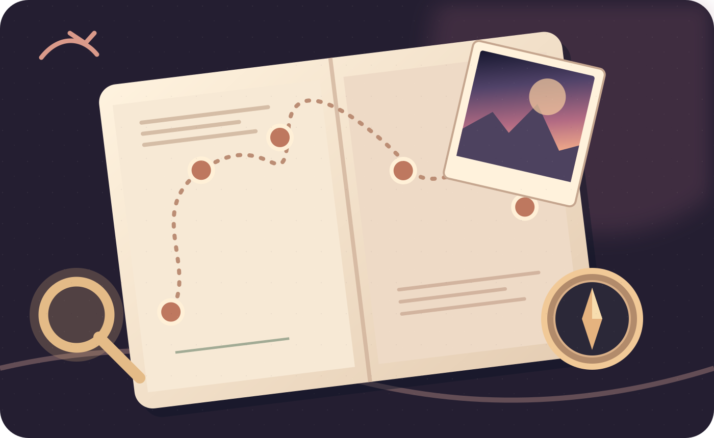
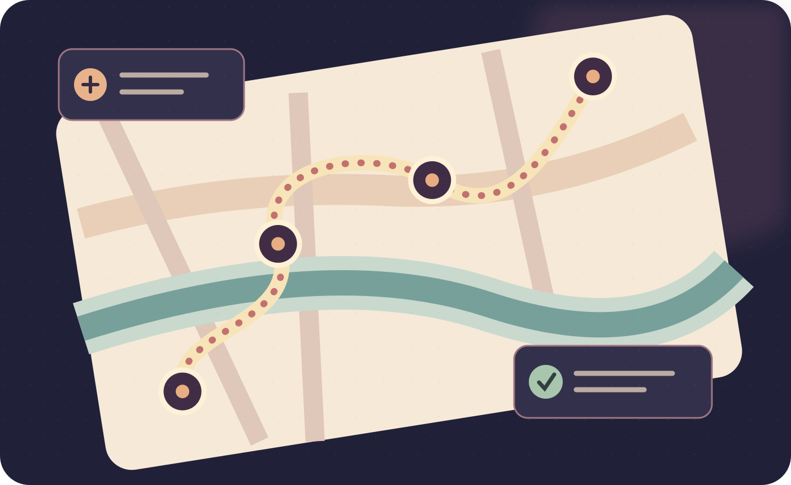
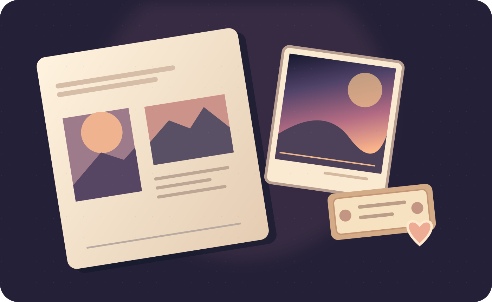

10 оригинальных SVG-ассетов — от атмосферной Москвы до самых маленьких кнопок. Изображения без встроенного текста; иконки масштабируются без потери детализации.




Все 16 категорий — собственные контурные рисунки вместо эмодзи.
Без спешки, сбалансированно и насыщенно.
Понятные пиктограммы для выбора удобного способа передвижения.
Сохранить, поменять, закрепить и поделиться.
Маршрутные линии, вечернее небо и мягкие световые акценты.
Цифры, важные ограничения, совпадения и статистика.